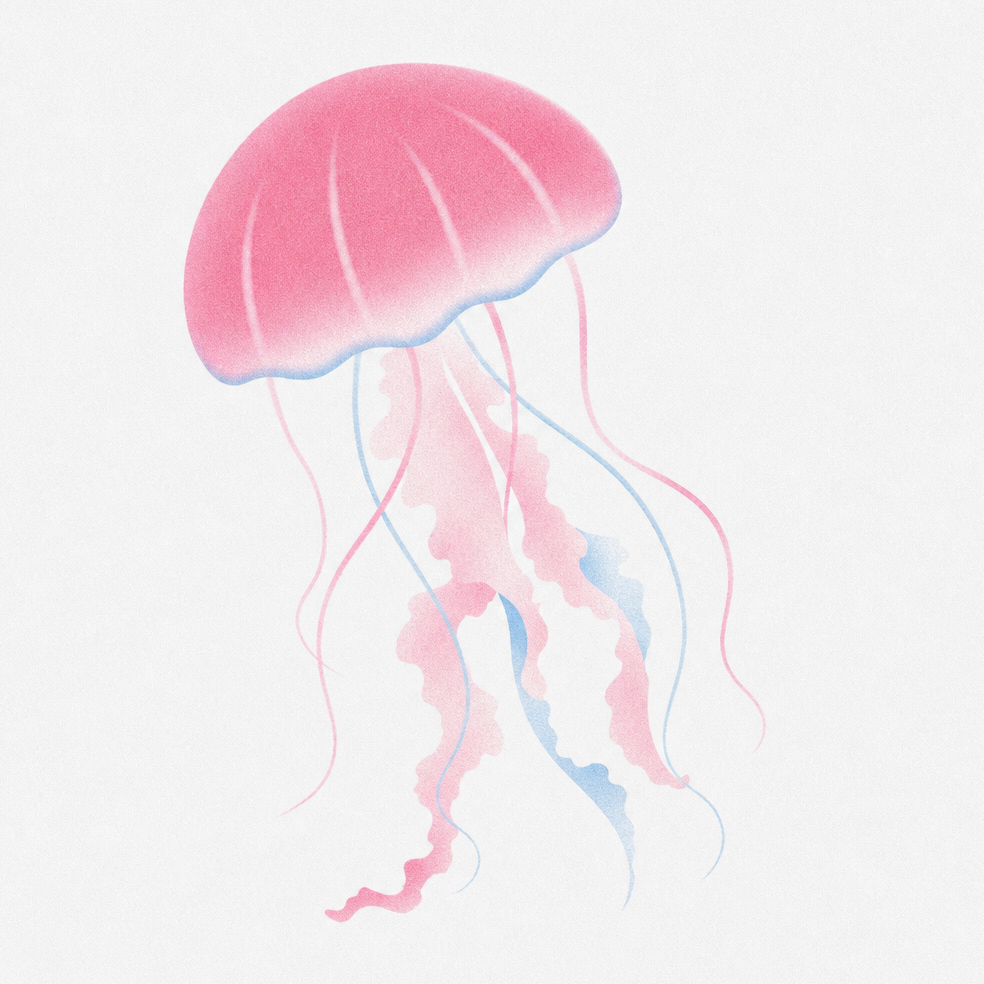

Говорят, глубоко под тёмной толщей воды, там, где свет растворяется в холодной синеве, дрейфуют медузы — тихие хранители чужих мыслей, забытых слов и несказанных историй. Jellyfish Preset родился именно там: среди солёного ветра, мерцания биолюминесценции и шёпота волн о далёких берегах.
Актуальная версия
v1.0.0
Скачать пресет
Стили авторов
Quertin Tarantino
Жанры
Пример жанра
Фетиши
Пример фетиша
Другие промпты
Пример промпта
Благодарности
Спасибо огромное Туристам, Селии, Яблочному пресету и другим! Именно благодаря им медуза увидела свет.